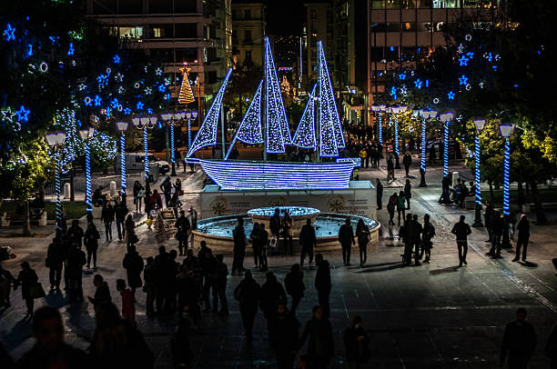
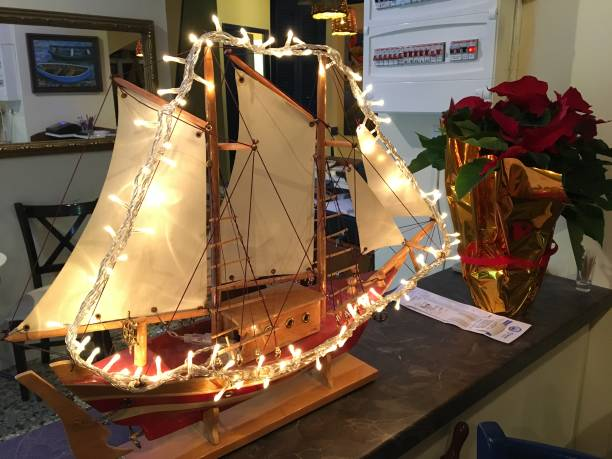
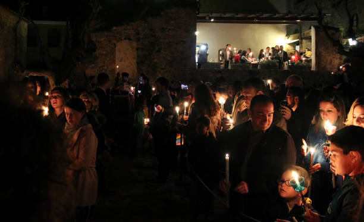
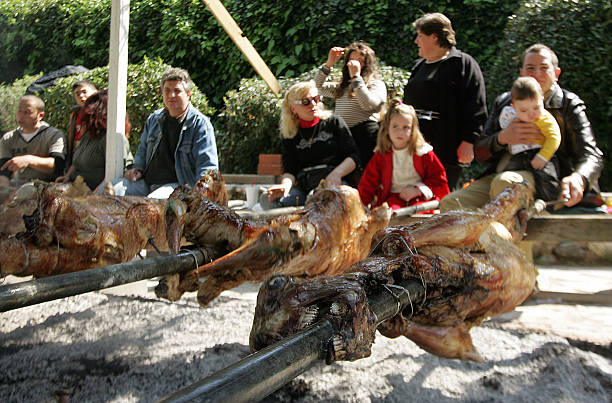
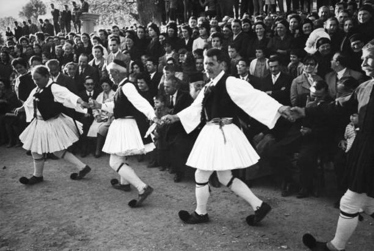
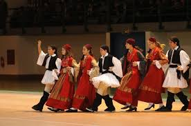
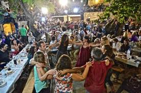
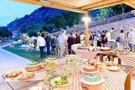
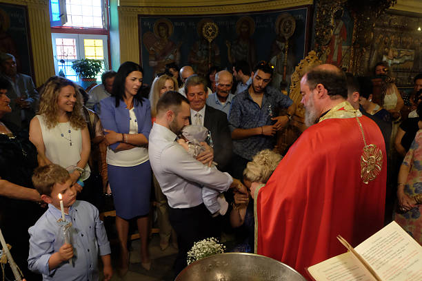

Explore a Grécia!
descubra um mundo de história, beleza e cultura vibrante!
descubra um mundo de história, beleza e cultura vibrante!
A Grécia é um país rico em tradições que refletem sua história, cultura e valores. Desde as antigas cerimônias religiosas até as festividades contemporâneas, essas práticas são parte essencial da identidade grega.
Uma das tradições mais marcantes é o Natal, que é celebrado com uma mistura de rituais cristãos e folclóricos. As famílias decoram suas casas com um barco, simbolizando a importância do mar na cultura grega. As ceias de Natal são repletas de pratos típicos, como o “vasilopita”, um bolo que contém uma moeda, e quem a encontra é abençoado no ano que vem.
 A Páscoa é outro momento importante, marcada por celebrações vibrantes. A Semana Santa é repleta de rituais, incluindo a confecção de pães especiais e a participação em missas. No Domingo de Páscoa, as famílias se reúnem para um grande banquete, onde o prato principal é frequentemente um cordeiro assado.
 As festividades folclóricas são uma expressão viva da cultura grega. Danças tradicionais, como o sirtaki e o kalamatianos, são dançadas em festas, onde as pessoas se juntam para celebrar com música e alegria. Os trajes típicos, como o “fustanella” dos homens e os vestidos coloridos das mulheres, enriquecem essas celebrações.
 A arte e a gastronomia também desempenham um papel central nas tradições gregas. Os pratos são muitas vezes preparados com receitas familiares transmitidas por gerações, refletindo o uso de ingredientes frescos e locais. Festivais de comida, como o Festival do Azeite e da Olive Oil, celebram os produtos regionais e a rica culinária mediterrânea.
 Rituais de passagem, como casamentos e batizados, são ocasiões repletas de significado. Nos casamentos, é comum a prática de dançar em círculo, simbolizando a união da nova família. Durante os batizados, uma cerimônia elaborada é realizada, onde o bebê é apresentado à comunidade.
